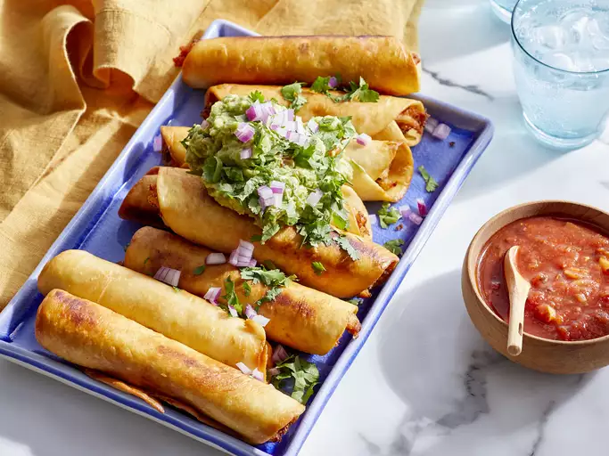

Tacos
Flautas are also known as rolled tacos.
These tasty chicken flautas are the best.
I learned how to
make them, and my husband loved them.
- ¼ cup butter
- ¼ cup all-purpose flour
- ¼ cup minced onion
- ¼ cup chopped black olives
- 2 tablespoons lemon juice
- 1 tablespoon oil
- teaspoon ground paprika
- ⅛ teaspoon ground black pepper
- ⅛ teaspoon salt
- oil for frying, or as needed
- 8 flour tortillas
- toothpicks
Steps
- Melt butter in a skillet over medium
heat; stir in flour until smooth.
Add onion; cook and stir until onion is
softened, 5 to 10 minutes. Add black olives,
lemon juice, 1 tablespoon oil, paprika, black pepper,
and salt; cook and stir until heated through,
about 2 minutes.
- Stir in chicken; remove the skillet from heat and cover.
- Heat oil in a large, heavy saucepan or deep fryer over medium-high heat.
- Fill tortillas with chicken mixture. Roll tortilla around filling and
secure with a toothpick.
- Working in batches, fry rolled tortillas in hot
oil until browned, about 2 minutes. Use a slotted
spoon or tongs to transfer tortillas
to a paper towel-lined plate; serve warm.